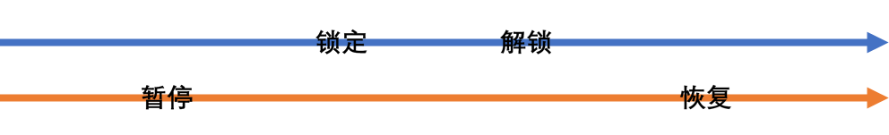

控制机器人行驶¶
SDK 提供两种风格来控制机器人行驶：
基于动作，精确、阻塞地控制
基于指令，连续、非阻塞地控制
这两种风格是不兼容的，无法同时使用，多线程使用时一旦发生冲突，未能开始执行的控制函数将会立即产生异常，而不是阻塞等待。
动作控制¶
动作是离散、同步、阻塞的概念。一个动作有明确的开始、运行、完成的过程。如无特殊说明，这些函数在运行中会阻塞当前线程。
执行动作将完全占用底盘：
一个动作在执行过程中除了被暂停或取消之外，是无法被干预的，动作会按预设的流程调整执行的方式，尽可能地满足开始执行之前对它的描述。
动作也会排斥其他控制行驶的操作，那些操作都会失败。当然，这也意味着动作之间是互斥的。
一个动作未完成前，另一个动作无法开始。
描述动作¶
要开始一个动作，需要以对其效果的描述为参数，调用对应的函数。具体到控制机器人行驶来说，有 3 类参数描述一个行驶动作：
速度：更好的表述是最大速度，因为底盘将自动在启动和停止时调速来保证运动的准确性。
路径：即转弯半径
r，对路径形状的描述。约束：行驶何时结束，可以是空间（如行驶一定距离或转过一定角度），也可以是时间。
暂停、恢复和取消¶
动作进行期间，除了其他外部的异常，如底盘突然锁定或串口连接突然断开之类，对其仅能进行的干预为暂停、恢复和取消。
暂停将会使机器人立即在原地刹停。
暂停不会使动作函数交出其控制权，其他动作和行驶控制仍然被排斥。以空间为约束的动作自然会随着底盘停止而停止其进程；同时，以时间为约束的动作，计时也会暂停。
恢复允许被暂停的动作继续执行。
从结果上，恢复不会影响动作总体的效果，进度也持续累加，看起来是恢复了之前的动作；但从过程上说，恢复像是开始了一个新的动作：底盘会以动作要求的最大加速度重新启动，而不是立即加速到暂停时的速度。
如果机器人速度较快且没有限制加速度，暂停引起的刹停可能引入较大的控制误差。由于加速和减速过程计时并不减慢，每一次暂停都会使由时间约束的动作越过的空间减少。限制加速度的情况下，暂停引起的刹停的耗时不计入时间约束中。
暂停和恢复操作不需要成对。无论暂停了多少次，一次恢复就会继续执行动作。
取消动作使动作立即结束并交还底盘控制权。由于动作并非正常完成，将有一个异常以合适的方式被抛出。
状态对动作的影响¶
动作的执行要求机器人必须保持正常（解锁）的状态。试图在锁定时开始动作将直接引发一个异常。在动作执行期间锁定底盘将使动作立即结束并交还底盘控制权。由于动作并非正常完成，将有一个异常以合适的方式被抛出。
注意，手柄也能锁定和解锁底盘，参见使用手柄遥控-锁定与解锁。
但有一个例外情况，暂停期间锁定底盘并不会中断动作；只要恢复之前将底盘解锁即可。
锁定、解锁、暂停恢复的操作当且仅当以下图所示的顺序交错时，动作才不会被终止。

指令控制¶
指令是连续、异步、非阻塞的概念。指令由用户代码发出，被发送到底盘，底盘的驱动程序将自主选择，在合适的时机，以合适的方式执行。
也就是说，指令可能无法得到准确的执行。但相应地，当一连串指令依次到来时，在指令之间的转移会更加流畅。而即使是两个相同的动作依次执行，第一个动作依然需要经历停止的减速，第二个动作也需要启动的加速。而指令不要求明确的开始和完成，因此也不需要阻塞。
在底层实现中，事件循环会反复对来自上层的指令做一定的修饰并周期性的控制底盘。事件循环中设置了超时，若较长时间内上层都没有发布新的指令，机器人将停止，以保证安全。因此，要正常控制机器人，必须以足够短的时间间隔反复发送指令。建议的指令周期为 0.1 秒，但任意快都是合法的，在单线程中，任意缩短指令周期不会降低底盘性能。
指令典型的应用领域是遥控程序。